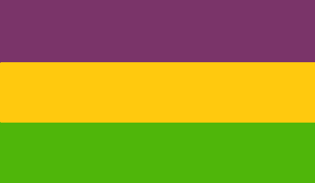

Glidis!
Join our Discord server!
Volapük
Volapük was created by Johann Martin Schleyer in 1879 and was the first international auxiliary language to gain widespread popularity.
Language clubs were formed all over the world and there were three Volapük Congresses in Friedrichshafen (1884), Munich (1887) and Paris (1889).
The official version of the language in use today is the 1931 revision by Arie de Jong which clarified some of the aspects of the original language.
Nowadays, interest for Volapük remains high among language lovers, although the number of actual speakers remains small.
Fasilik
Volapük Fasilik is a variant of the language which aims to make it more accessible and comprehensible for new learners.
It simplifies some of the aspects of original and reformed Volapük, and provides a way to learn the essentials of the language.
Volapük Fasilik is a modern, living language, guided by its community.
Volapük Fasilik grammar
Volapük Fasilik Dictionary
01
02
03
04
05
Volapük without umlauts dictionary
Statistics: Frequency of usage of Volapuk's suffixes
Small words (prepositions, conjunctions and adverbs)
Some translations